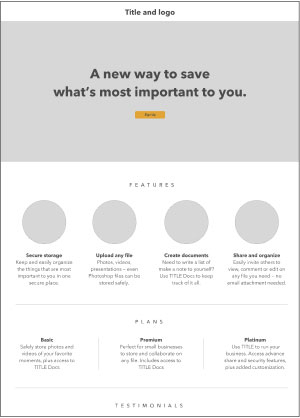
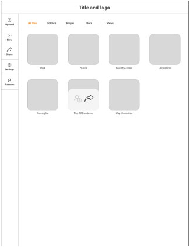
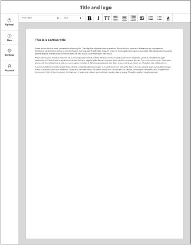
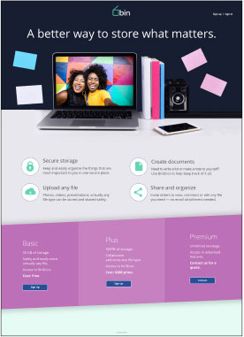
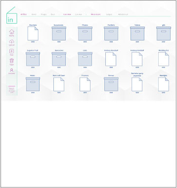
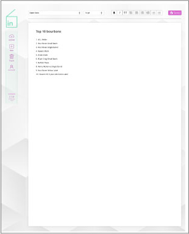

Create a user experience that makes saving, organizing, sharing, creating and collaborating simple and easy.
Make a clean, organized and basic interface that is visually pleasing and inviting to new and inexperience users.
What do users want and expect?
Why don’t people use cloud storage?
What would make non-users become users?
Do the user’s preferences align with the client’s proposal?
The results
Cloud storage users vs. Non-users
70%
Cloud storage users
30%
Cloud storage non-users
The majority of respondents are college-educated men who travel to the city from the suburbs to work.
Of those 70% using cloud storage ...
Dropbox and Google Drive are most popular.
Most are willing to pay for more space.
Photos & video are most common uses.
Of the 30% not using cloud storage ...
Distrust the security or don't understand how the technology works.
Storing photos and videos would be main reason.
Google Drive and Google’s suite of apps uses the same basic process for content organization and creation as you would for your own computer or when using Word. Visually it’s well organized, clean and simple. It only uses flourishes when needed for emphasis or navigation.
Bin should do everything that Evernote does well, but Bin should be easier to use. Evernote does content organization and creation well, but lacks in collaboration features. Matching Evernote where it does well and expanding on work collaboration features should tempt users.
It’s clean, simple and basic design is a good place to start for new services wanting to offer something to potential users who may not yet use cloud storage. It’s easy to store and organize content, but its content creation and work collaboration features are limited.
Laura is a working professional who is organized, efficient and a leader. Laura is a wife of five years and the mother of a three-year old boy and loves spending time with her family. Laura leads a staff of 12 people and wishes she was able to do more on the go so she could spend more time with her family but make her more efficent.
Laura’s motivations
Keep track of her projects and her staff’s progress on-the-go, or in meetings at work.
To reference pieces of other projects.
Laura’s goals
Wants to track the progress of all the projects she’s leading.
Wants an easier way to collaborate with her staff on those projects.
Wants to work iteratively with her staff on the go.
Organize projects and versions easily.
Laura’s frustrations
Having to constantly be connected to email.
Being cutoff from real-time communication with staff.
Not having a central organized file system.
He’s extremely family-oriented. His whole world revolves around his wife and two daughters. Michael is very busy with his job as social media director for a D.C. non-profit. He’s constantly staying up-to-date on news and reactions. Whether it’s Michael’s job or his desire to document the latest family adventure to share with family and friends, he’s constantly attached to his phone.
Michael’s motiviations
Uses Evernote for work and Dropbox for family, but would like having one place for both.
Michael’s goals
Make it easier to switch between work and family.
To store article clips, social media posts, notes and task lists for work.
To store photos and videos of his family.
To be able to easily share content.
To keep work and family items separate and organized in one place.
Michael’s frustrations
Hates having to switch between apps so often.
Wishes he could more easily share content.
Need information about the product.
A place to sign up.
Need to be able to login.
Upload, organize and share from any device.
Upgrade space
Pay yearly for the upgrade.
Pay monthly for the upgrade.
Save clips from the web
Content such as notes, lists, tasks
Share content with others
Share content to social media
Collaborate with co-workers
Sketches
First step was to sketch ideas for main sections of the app and website. I did four-up sketches for the landing page, onboarding, dashboard and text document creation.
  Wireframes
Second step was to create digital wireframes from the sketches. Because I did four-up sketches, I took the best ideas from each sketch and put them together in the wireframes.
  Mockups
Once the wireframes were done, the third step was to build mockups of how the app and website would actually look based on the the basic structure and content of the wireframes.
1. Dark background or white background.
The white background won by a slight margin. I think one way to address this is to give users the option to choose between a light or dark background.
2. Current rail color palette of green screen and purple buttons or the inverse.
Two-thirds of those who responded replied that they prefer the rail as it is currently purple on green.
3. Rounded corners or square corners.
Round corners won by a slim margin of 55%, so because of the split I kept the round corners to tie in with the branding.
One more check to make sure users had no issues getting signed up, logged in and were able to easily use the features proved successful. No users had issues with anything other than deciphering some iconography used to communicate a few actions. That prompted me to replace the icons with text.
This process from start to finish is challenging. If there was an error to be made, I probably made it in this project. The part that probably worked the best was the user research portions. I think I got some very educational feedback and if I had more time I would have tried to get more responses. I think in the future, I’ll try harder to test everything more. Do preference tests on more stuff and try to get more survey results.